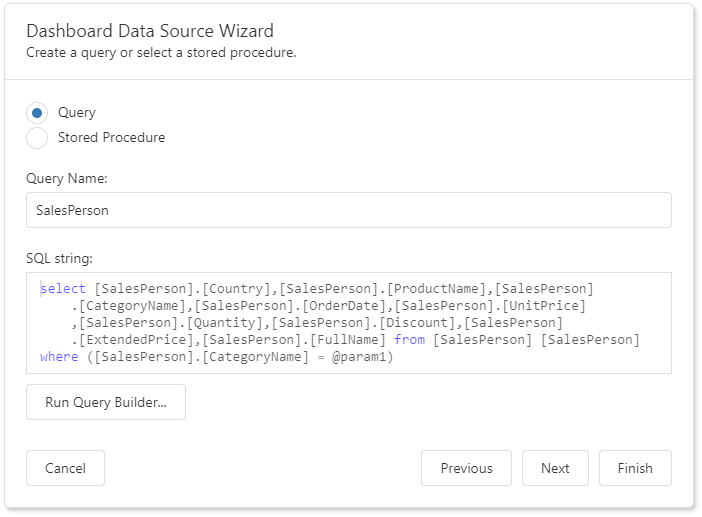
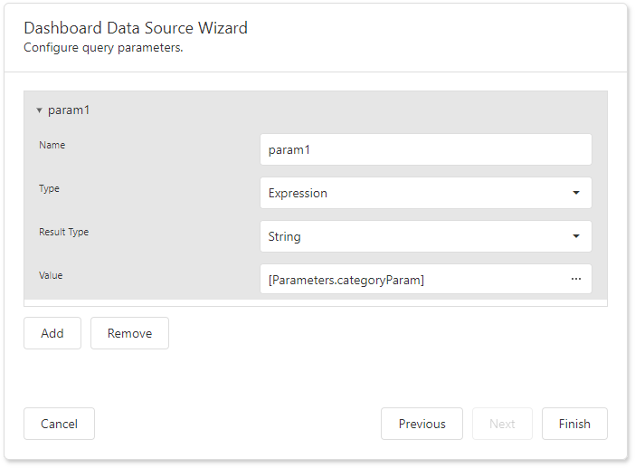

Specify Data Source Settings (Database)
The following pages are available for the Database source type:
Select a Data Connection
The "Choose a data connection" page appears if you select Database on the start page. Select an existing connection from the list.

Choose Queries
The next page allows you to create/edit a query or select a stored procedure. The image below shows a generated query displayed in the SQL string editor.

Click Run Query Builder... to launch the Query Builder and choose the tables/columns visually.
Configure Query Parameters
If the SQL query contains query parameters, click Next to configure them.

You can use the following techniques to specify a parameter value:
Assign a static value
Select a query parameter's type from the Type drop-down list and specify a value based on the selected type.
Provide a dynamic parameter value
Set the Type option to Expression and specify the Result Type. Click the Value option's ellipsis button and construct an expression in the invoked Expression Editor.
Click Finish to create a new data source.